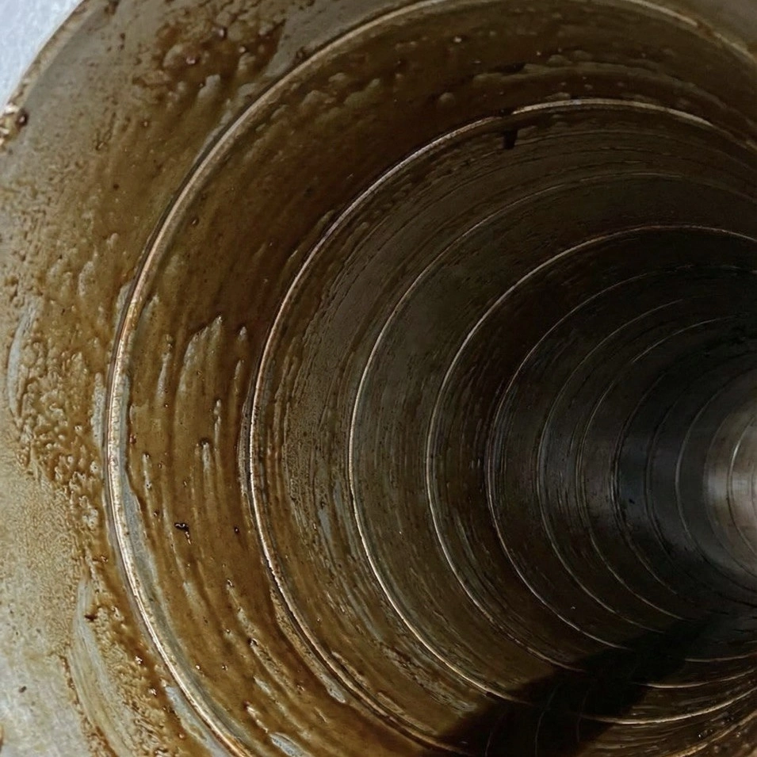
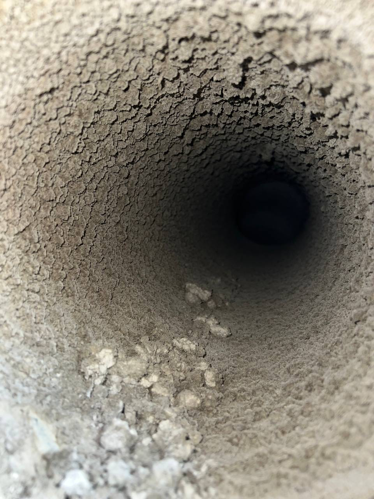

Розроблено спеціально для ресторану «Кораблик» та мережі «Take Five Hospitality Group»
Наша компанія розпочала свою діяльність із проєктування та монтажу вентиляційних систем. Здобувши значний практичний досвід, ми згодом вирішили розширити спектр послуг, зайнявшись ще й професійним обслуговуванням та очисткою. Це доводить головне: ми досконало знаємо, як обслуговувати системи, адже ми вміємо їх монтувати. Ми розуміємо анатомію вентиляції зсередини.
Основною послугою, яку ми вам пропонуємо, є професійна очистка внутрішньої поверхні повітропроводів від жирових відкладень. Це особливо актуально для витяжок із зони фритюру, варильної поверхні та гарячого столу для бургерів.
Саме в цих зонах накопичується найбільша кількість жиру, який з часом може прокапувати зі стиків і, що найважливіше, становить критичну пожежну небезпеку.

Також ми наполегливо радимо не ігнорувати очистку витяжки кондитерсько-пекарського відділу. У цих зонах борошно та цукрова пудра осідають на стінках повітропроводів, утворюючи легкозаймисту суміш, яка становить ще вищу пожежну небезпеку, ніж жирові відкладення.
